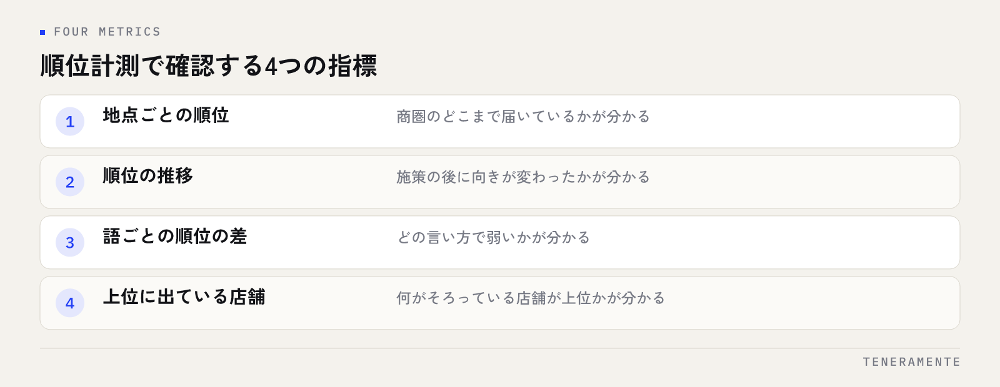

MEO対策を続けていると、「やっていることは分かるが、効いているのかが分からない」という状態になりがちです。これを抜けるために使うのが順位計測ツールですが、見るべきなのは「今何位か」ではなく、どの語で・どの場所で・どちらへ動いたかです。測り方と、確認すべき指標を整理します。
📌 この記事の結論
マップ検索の順位は検索した場所によって変わるため、1つの数字では判断できません。順位計測ツールは「店舗の周辺を複数の地点に分けて、同じ語を定期的に測る」ために使います。見るのは順位そのものではなく、地点ごとの差と、時間の経過による向きです。
01「見える化」が必要になるのは、打ち手と結果が離れているから
MEO対策の作業は、カテゴリの見直し、営業時間の正確化、写真の追加、口コミへの返信、投稿の継続といった地道なものです。どれも効果が出るまでに時間がかかり、1つの作業と1つの結果が線で結びつきません。
そのため、作業を続けているのに手応えがないという状態になります。ここで起きやすいのは、効いているかどうかを確かめずに施策を増やすことです。増やすほど、何が効いたのかはさらに分からなくなります。
見える化とは、きれいなグラフを作ることではありません。打ち手を続けるか、やめるか、変えるかを判断できる材料を定期的に手元に置くことです。そのために必要な数字は、それほど多くありません。MEO対策全体の進め方はMEO対策の完全ガイドにまとめています。
02順位が1つに決まらないのは、検索した場所で変わるから
マップ検索の結果は、検索した人がどこにいるかによって変わります。店舗の前で検索したときに上位に出ていても、2駅離れた場所からの検索では圏外ということが普通に起きます。
つまり「当店は〇位です」という言い方そのものが成立しません。自分の店舗や自宅で検索して確認する方法では、その1地点の結果しか分からないうえ、自店の情報を見慣れた端末から検索しているという偏りも乗ります。
ここを埋めるのが、geo grid（ジオグリッド）という考え方です。店舗の周辺を網目状の複数の地点に分け、それぞれの地点から同じ語で検索したときの順位を一覧にします。順位計測ツールの多くは、この形で結果を表示します。
見たいのは1つの順位ではなく、どの範囲まで上位に出ているかです。範囲が分かれば、商圏のどこに届いていないかが分かります。
03順位計測ツールで確認すべき指標
ツールによって画面は違いますが、判断に使う指標は共通しています。

導入前に確認すること
無料で使える範囲、測れる語の数、地点の数、記録が残る期間はツールによって違います。長く続けるものなので、測れる語の数より「過去の記録がどれだけ残るか」を先に確認してください。比較するための過去がないと、順位の数字は判断材料になりません。
指標は次のように役割が分かれています。
| 指標 | 何が分かるか | 見る頻度の目安 |
|---|---|---|
| 地点ごとの順位 | 商圏のどこまで届いているか | 月1回 |
| 順位の推移 | 施策の後に向きが変わったか | 月1回 |
| 語ごとの順位の差 | どの言い方で弱いか | 月1回 |
| 上位に出ている店舗 | 何がそろっている店舗が上位か | 施策を決めるとき |
管理画面側の数字（閲覧数やルート検索）と合わせて見ると、順位の動きが反応につながったかまで確認できます。管理画面の数字の読み方はMEOレポートの見方に分けて書いています。
04測る語は、絞ってから固定する
計測の設定でつまずくのは、測る語を決める場面です。思いつく語を全部入れると、毎月見る量が増えて続きません。
決め方は3つの観点で足ります。1つ目は、来店につながる言い方。「地域名＋業種」のように、探している人が実際に打つ形です。2つ目は、業種の言い方の違い。「整体」と「整骨院」のように複数の呼び方があるものは、両方を入れておくと弱い側が分かります。3つ目は、主力のサービス名です。
語は一度決めたら、しばらく変えずに固定してください。語を入れ替えると、過去との比較ができなくなります。
地点のほうは、店舗を中心に、来店してもらいたい範囲を覆う形で置きます。徒歩圏だけで足りる店舗と、車で30分の範囲を見たい店舗では、置き方が変わります。来ていただける距離より広く測っても、判断には使えません。
05動いた数字は、3つの型で読む
計測を始めると、毎月の数字をどう読むかで迷います。読み方は3つの型に分けると決まります。
1つ目は、順位も閲覧数も上がっているとき。これは続ける判断です。直前に何をしたかを記録に残し、同じことを他の語や地点にも広げます。
2つ目は、順位は上がったが閲覧数や反応が動かないとき。上位に出ても選ばれていない状態なので、見るのは順位ではなく店舗情報の中身です。写真、口コミ、営業時間、サービスの記載といった、見た人が判断する材料のほうに原因があります。
3つ目は、順位が動かないときです。ここで施策を増やす前に、測り方を疑ってください。語が実際には検索されていない、地点が商圏から外れている、施策から日が浅い、のいずれかであることが多いです。
数字が動かないことと、打ち手が効いていないことは、同じではありません。
06計測の頻度は、月1回で足りる
毎日見ても判断は変わりません。順位は日によって揺れるため、短い間隔で見るほど、揺れを変化と読み違えます。
現実的なのは、月1回、同じ日あたりに同じ語・同じ地点で測って記録する形です。測った結果は、スクリーンショットだけでなく、数字と「その月にやったこと」を1行で並べて残してください。半年たったときに、効いた施策を見返せるのはこの記録だけです。
順位を目的にしない
順位は、来店や問い合わせの手前にある途中の数字です。上位に出ること自体を目標にすると、情報の正確さや口コミへの対応といった、本来の判断材料を整える作業が後回しになります。最終的に見るのは、来店数と問い合わせ数のほうです。
07よくある失敗を、先に知っておく
計測でつまずく形は、だいたい次の3つです。
1つ目は、自分の端末で検索して順位を確認することです。検索履歴や現在地の影響を受けるため、他の人が見ている結果とは違います。確認したつもりが、自店に都合のよい結果だけを見ていることになります。
2つ目は、測る語を毎月変えてしまうことです。順位が思ったように上がらないと、別の語を試したくなります。しかし語を変えると、前月との比較という唯一の判断材料が消えます。
3つ目は、記録を残さないことです。ツールの画面を見ただけで終えると、翌月には前の状態を思い出せません。数字と施策を並べて1行ずつ残すだけで、判断の精度が変わります。
順位計測ツールは必ず必要ですか？
順位が下がったら、何から確認すればよいですか？
何位を目指せばよいですか？
08まとめ：測るのは、続けるかどうかを決めるため
MEO対策の見える化は、順位を数字で眺めるためのものではありません。マップ検索の順位は検索した場所で変わるため、店舗の周辺を複数の地点に分けて、同じ語を同じ条件で定期的に測ります。
進め方は、測る語を3つの観点で絞って固定する、来店してもらいたい範囲に地点を置く、月1回測って数字とその月の施策を1行で残す、動いた数字を3つの型で読む。これだけで、打ち手を続けるか変えるかの判断はできます。順位は途中の数字で、見る目的は来店と問い合わせの変化を説明できるようにすることです。
TENERAMENTEなら、測る語と地点の設計から、月1回の記録の型づくり、順位が動いたときにどこを見るかの判断基準の整理まで、店舗の商圏に合わせて組み立てます。毎月の確認が担当者の感覚に頼らず同じ手順で終わり、施策を続けるかどうかを数字で決められるようになります。MEO対策の進め方をご覧いただいたうえで、お問い合わせからお気軽にご相談ください。